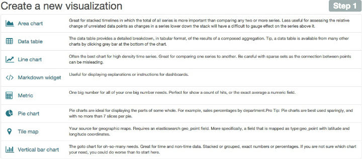
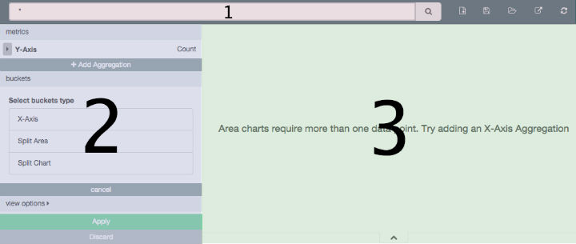

Visualizeedit
You can use the Visualize page to design data visualizations. You can save these visualizations, use them individually, or combine visualizations into a dashboard. A visualization can be based on one of the following data source types:
- A new interactive search
- A saved search
- An existing saved visualization
Visualizations are based on the aggregation feature introduced in Elasticsearch 1.
Creating a New Visualizationedit
To start the New Visualization wizard, click on the Visualize tab at the top left of the page. If you are already creating a visualization, you can click the New Visualization button in the toolbar to the right of the search bar. The wizard guides you through the following steps:
Step 1: Choose the Visualization Typeedit
The New Visualization wizard starts with the following page:

You can also load a saved visualization that you created earlier. The saved visualization selector includes a text field to filter by visualization name and a link to the Object Editor, accessible through Settings > Edit Saved Objects, to manage your saved visualizations.
If your new visualization is a Markdown widget, selecting that type takes you to a text entry field where you enter the text to display in the widget. For all other types of visualization, selecting the type takes you to data source selection.
Step 2: Choose a Data Sourceedit
You can choose a new or saved search to serve as the data source for your visualization. Searches are associated with an index or a set of indexes. When you select new search on a system with multiple indices configured, select an index pattern from the drop-down to bring up the visualization editor.
When you create a visualization from a saved search and save the visualization, the search is tied to the visualization. When you make changes to the search that is linked to the visualization, the visualization updates automatically.
Step 3: The Visualization Editoredit
The visualization editor enables you to configure and edit visualizations. The visualization editor has the following main elements:

Toolbaredit
The toolbar has a search field for interactive data searches, as well as controls to manage saving and loading visualizations. For visualizations based on saved searches, the search bar is grayed out. To edit the search, replacing the saved search with the edited version, double-click the search field.
The toolbar at the right of the search box has buttons for creating new visualizations, saving the current visualization, loading an existing visualization, sharing or embedding the visualization, and refreshing the data for the current visualization.
Aggregation Builderedit
Use the aggregation builder on the left of the page to configure the metric and bucket aggregations used in your
visualization. Buckets are analogous to SQL GROUP BY statements. For more information on aggregations, see the main
Elasticsearch aggregations reference.
In bar or line chart visualizations, use metrics for the y-axis and buckets are used for the x-axis, segment bar colors, and row/column splits. For pie charts, use the metric for the slice size and the bucket for the number of slices.
Choose the metric aggregation for your visualization’s Y axis, such as count, average, sum, min, max, or cardinality (unique count). Use bucket aggregations for the visualization’s X axis, color slices, and row/column splits. Common bucket aggregations include date histogram, range, terms, filters, and significant terms.
You can set the order in which buckets execute. In Elasticsearch, the first aggregation determines the data set for any subsequent aggregations. The following example involves a date bar chart of Web page hits for the top 5 file extensions.
To use the same extension across all hits, set this order:
- Color: Terms aggregation of extensions
-
X-Axis: Date bar chart of
@timestamp
Elasticsearch collects the records for the top 5 extensions, then creates a date bar chart for each extension.
To chart the top 5 extensions for each hour, use the following order:
-
X-Axis: Date bar chart of
@timestamp(with 1 hour interval) - Color: Terms aggregation of extensions
For these requests, Elasticsearch creates a date bar chart from all the records, then groups the top five extensions inside each bucket, which in this example is a one-hour interval.
Remember, each subsequent bucket slices the data from the previous bucket.
To render the visualization on the preview canvas, click the Apply button at the bottom of the aggregation builder.
Preview Canvasedit
The preview canvas displays a preview of the visualization you’ve defined in the aggregation builder. To refresh the visualization preview, clicking the Refresh button on the toolbar.